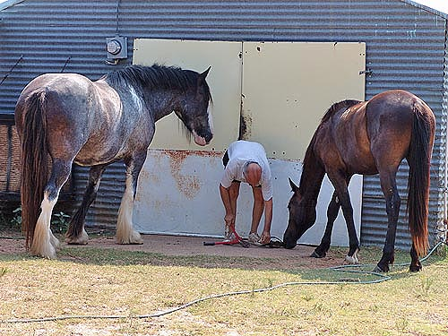
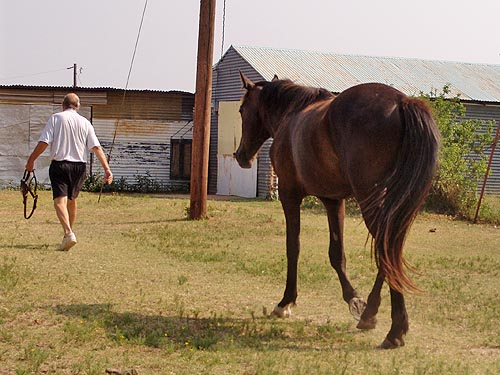
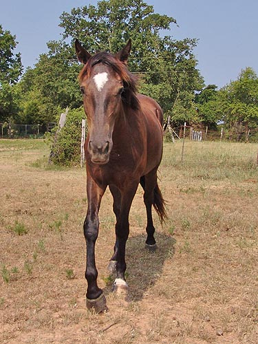
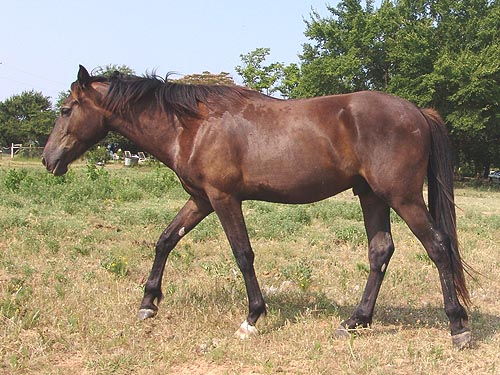
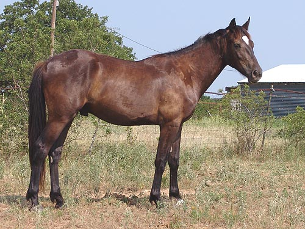
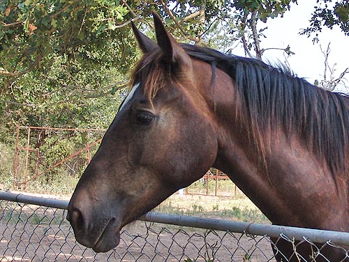

Growing taller every month it seems.
The vet thinks he's about done, but at
2,
I think there's a chance we'll get a couple
more inches and hit 16 hh. Right now he's
taller
than Thuy and the Haflingers.

Miaren and Emma are always trying
to help father with his projects.

If father is in the pasture, Miaren
isn't going to be too far away.

Not easy to take picture if he sees
you in the pasture. So friendly, but at 2 he's learned that he's not supposed
to play with humans, only other horses.

He's got the cob neck a bit, but it's
lower set than a full cob. At least it has length, and might end up matching
the rest of his body when he finished growing.

Here you can see that the neck isn't
that bad. He's leaning toward having the TB dip in front of his withers,
but his neck is the only thing I fault of his body. His head migth end
up being a bit more refined than what would match his body, but I'll wait
and see on that. I hope to get some more ground work on him this fall/winter
so his topline can start to develop properly.

Still a youngster's head. That's bleaching,
not graying around the eyes (I think). He'll be a fun one to start next
year. So athletic that it's a little scary to me. He doesn't have much
respect for fences, and occassionally jumps from pasture to pasture if
the hay man's coming and he wants to see what's going on....